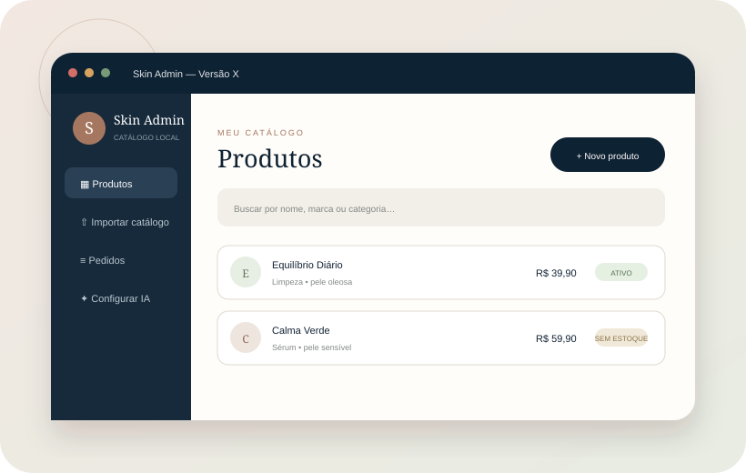
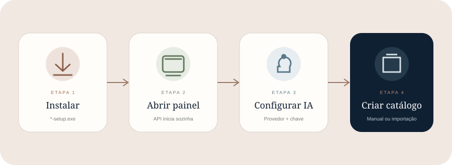
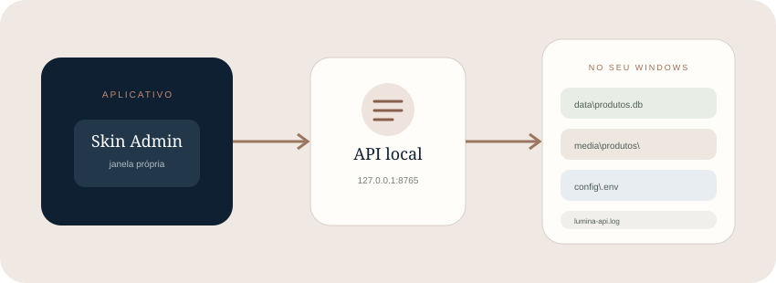

Você recebeu *-setup.exe
Pode seguir diretamente para a instalação. Depois de instalado, o usuário final não precisa instalar Python, Node.js, Rust nem abrir o VS Code.
O Skin Admin abre em uma janela própria, inicia sua API local silenciosamente e guarda banco, imagens e configurações no computador.

Entenda a diferença entre o instalador pronto e o código-fonte.
*-setup.exePode seguir diretamente para a instalação. Depois de instalado, o usuário final não precisa instalar Python, Node.js, Rust nem abrir o VS Code.
Primeiro alguém precisa gerar o instalador em um computador Windows. A seção Gerar o instalador explica esse processo.
build_windows.bat. A chave é configurada depois, dentro do próprio painel, somente se você quiser usar análises ou importação por IA.O processo é semelhante a qualquer outro aplicativo do Windows.

uvicorn.O arquivo normalmente termina em -setup.exe. Dê dois cliques nele.
Esta edição não possui certificado comercial de assinatura. O SmartScreen pode exibir um aviso. Só prossiga se o instalador veio do repositório ou de uma pessoa em quem você confia. Nesse caso, use Mais informações → Executar assim mesmo.
Siga o assistente do Windows. Ao terminar, procure Skin Admin no menu Iniciar e abra o aplicativo.
O aplicativo prepara uma API local e cria as pastas de dados. A primeira abertura pode demorar um pouco mais que as seguintes.
Você pode começar pelo catálogo ou configurar a IA primeiro.
As seções principais do painel são:
| Seção | Para que serve |
|---|---|
| Produtos | Consultar, pesquisar, cadastrar, editar, ativar e desativar itens. |
| Importar catálogo | Trazer muitos produtos de uma planilha ou organizar texto com IA antes de confirmar. |
| Pedidos | Ver registros demonstrativos feitos no frontend. Não há pagamento. |
| Configurar IA | Escolher Gemini, OpenAI ou Claude e salvar a chave localmente. |
Cadastre poucos produtos manualmente ou importe muitos de uma vez.
Clique em Novo produto. Somente quatro informações são essenciais:
Como o produto será identificado.
Valor usado na apresentação e no registro demonstrativo.
Limpeza, sérum, hidratante, protetor solar ou outros.
Oleosa, seca, mista, normal ou todos.
Marca, descrição, foto, conteúdo/volume e ativos principais são opcionais. Quando faltam, o frontend informa isso de forma neutra em vez de inventar dados.
Melhor para dados já organizados. O painel aceita até 1.000 produtos por arquivo CSV/XLSX de até 5 MB.
Melhor para informações copiadas ou bagunçadas. Cole até 100 produtos por lote.
Você precisa configurar apenas um provedor; pode trocar quando desejar.
Informe a chave Gemini e o modelo desejado. É o provedor originalmente usado pelo projeto.
Informe sua chave OpenAI e um modelo compatível configurado no aplicativo.
Escolha Anthropic/Claude, informe a chave e o modelo disponível na sua conta.
Selecione o provedor que você realmente pretende usar.
Copie a chave criada no portal do provedor. Não use uma chave recebida de terceiros.
A chave fica no diretório local do aplicativo e não é devolvida pela API. Feche a tela somente após a confirmação.
Use uma descrição de pele clara ou a importação por texto. Se catálogo e perfil manual funcionam, mas IA não, confira chave, modelo, quota e internet.
Ele demonstra uma seleção de rotina; não transforma o projeto em loja.
Nome, e-mail e itens somente após consentimento. O sistema guarda uma cópia do nome, marca, imagem e preço daquele momento.
Não há cobrança, cartão, frete, autenticação, nota fiscal ou checkout real. O estoque não diminui por padrão.
O aplicativo não depende do banco da demonstração pública.

Os arquivos ficam dentro de:
%LOCALAPPDATA%\com.gabrielalmeida.skinadmin\| Item | Conteúdo |
|---|---|
data\produtos.db | Produtos e registros demonstrativos. |
media\produtos\ | Imagens enviadas pelo painel. |
config\.env | Configuração local, inclusive provedor e chave. |
lumina-api.log | Informações úteis quando algo falha. |
Ao restaurar, mantenha o aplicativo fechado e preserve a estrutura das pastas. Proteja o backup: config\.env pode conter uma chave privada.
Uma comparação sem termos técnicos desnecessários.
| Antes / v3.9 | Versão X |
|---|---|
| Era preciso abrir terminais e iniciar a API e o painel. | O painel instalado inicia a API local silenciosamente. |
| O projeto de demonstração podia carregar 50 produtos fictícios. | Cada instalação começa vazia e pronta para o catálogo do usuário. |
| Cadastro pensado principalmente produto por produto. | Também importa planilhas e organiza dados soltos com IA. |
| Mais campos editoriais eram exigidos. | Somente nome, preço, categoria e tipo de pele são essenciais. |
| Resultado visual mais próximo de uma lista de catálogo. | Produtos aparecem como etapas de uma rotina, com principal e alternativas. |
| A configuração dependia de arquivos do projeto. | O aplicativo permite escolher Gemini, OpenAI ou Claude pelo painel. |
| Não havia fluxo completo de registro demonstrativo. | É possível registrar e apagar seleções, com consentimento e prazo máximo de 365 dias. |
Esta parte é para quem vai preparar o arquivo de instalação, não para o usuário final.
Use um computador Windows com:
Extraia a Versão X, abra a pasta raiz e execute:
build_windows.batO processo instala dependências, testa, compila a API auxiliar e monta o instalador. As saídas esperadas são:
dist\lumina-api.exe
admin\src-tauri\target\release\bundle\nsis\*-setup.exeComo alternativa, o repositório possui um fluxo manual chamado build-desktop-windows.yml, que pode gerar os artefatos em um executor Windows do GitHub.
Primeiro identifique se a falha ocorre ao instalar, abrir, salvar produtos ou usar IA.
lumina-api.log na pasta de dados. Verifique também se outro programa está usando a porta local 8765.docs\GUIA_DESKTOP.md do projeto detalha o build.Antes de entregar o computador ou o instalador, confira: